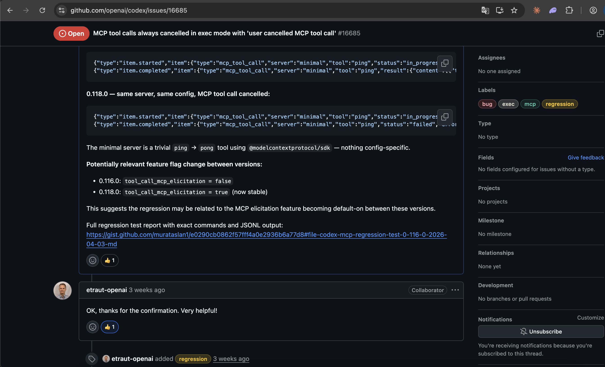
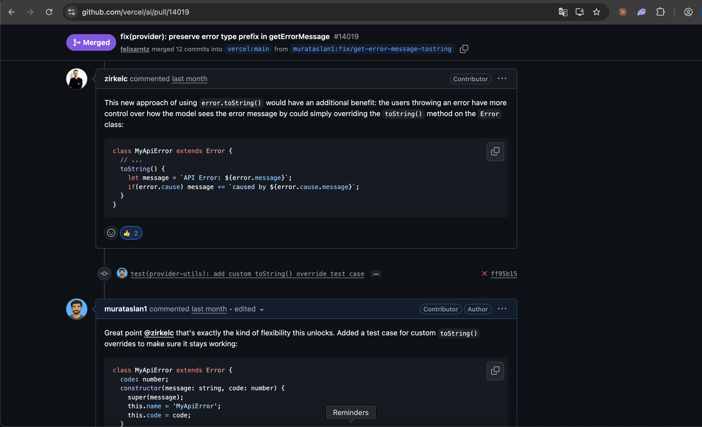
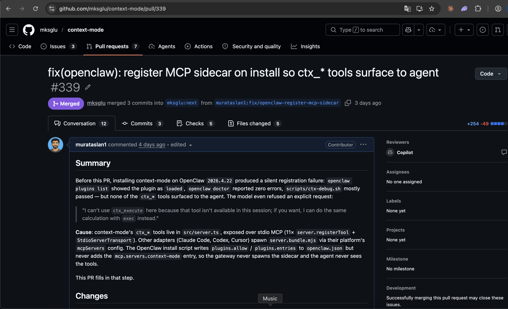
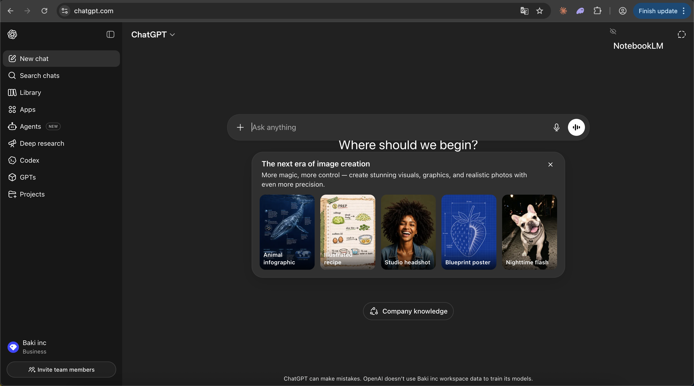
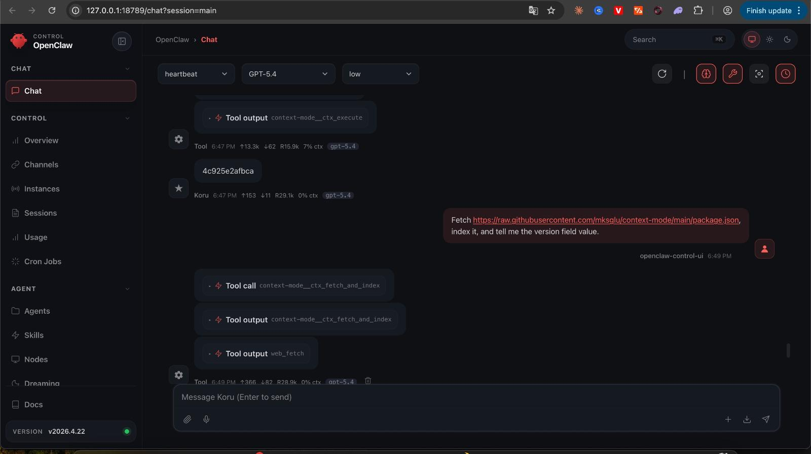
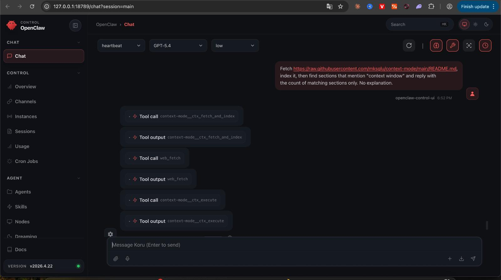

Murat Aslan · ClawCon Ankara
"Your agent says Done.
Did it actually do anything?"
Hook — your script that runs before/after every tool call. Allow, block, log, inject context.
MCP — the protocol agents use to talk to external tools. ctx_search, read_file etc. come from here.
WSL — on Windows, hooks and MCP servers run inside a Linux environment. That's where your bash scripts live.
Codex's exec mode was closing every MCP tool call with "user cancelled".
No error on screen. The tool never ran.
[exec] calling tool: ctx_search
[exec] user cancelled MCP tool call
# the user cancelled nothing.
Filed an issue → OpenAI maintainer confirmed it, regression label added
In the Vercel AI SDK, tool exception types (TypeError, RangeError) were getting stripped before reaching the model.
Model sees "API crashed" — was that a failure or a normal string return? It can't tell.
- error.message // "API crashed"
+ error.toString() // "TypeError: API crashed"
Merged by Vercel AI maintainers → added a follow-up test case, listed as contributor
context-mode (an OpenClaw feature) wasn't registering the MCP sidecar on install.
ctx_* tools never reached the agent.
install() {
+ register_mcp_sidecar()
link_binaries()
}
Merged by the OpenClaw maintainer (mksglu) → this is your community's repo

End-to-end verification → the patched install script actually surfaces ctx_* tools to the agent


And it works live → the agent uses ctx_fetch_and_index, ctx_execute
All three times the screen
said "it worked".
Don't trust the screen. Read the logs.
Because I was sending PRs while using the tools.
2025 Deno → first big OSS merge
2026 VS Code → LangChain → Traefik
Coolify → Vercel AI → context-mode (openclaw feature)
You're already inside the OpenClaw community.
That's half the work. The other half: the issues tab.